——写在前面——
这是80lv在25年对我的作品《驻足》进行的一次创作过程采访。
采访者：Gloria Levine
下面就是采访的部分，我的中文部分就是原始文稿了。
自我介绍部分现在看起来太羞耻了，我就不放这里了。
Gloria Levine简称G
我就简称V
G：您是如何开始 “驻足 - 上色版” 这个项目的？创作灵感来自哪里？您想通过这项作品尝试表达什么？
V：“驻足”也就是“停留”“驻留”“停留在这个地方”“落脚的地方”的意思，灵感始源于安德烈·塔可夫斯基的《镜子》这部电影，里面的一个画面触动了我（仅仅只是画面，和电影的主题无关），画面中一个男孩在雪地中行走，他停在一颗树下，树上的小鸟飞到他的头上停留。这让我印象深刻，雪地、枯树、小鸟、悲伤的男孩，这些元素组合在一起形成了极具生命力和诗意的画面。
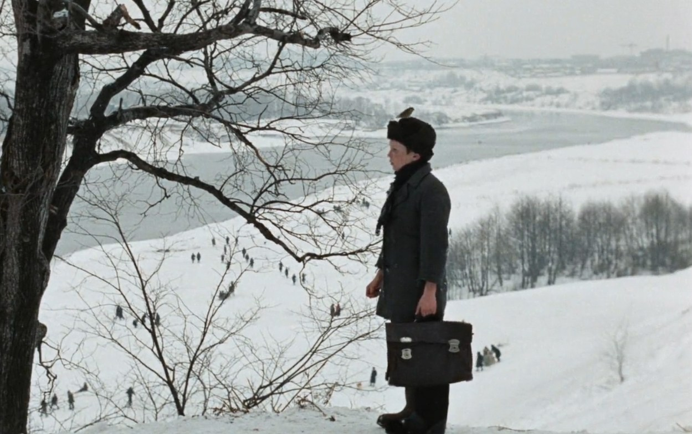
后来我通过模型雕刻来抒发我的感受，在过程中才定下了现有的造型元素，并不是一开始就设计好的。
关于主题，我并不想去强调一个作品想表达的思想和深意，也不想去长篇大论描述或定义我的作品，我觉得那是在破坏，破坏作者或观者的在感受作品时能够通过感性去发散的空间，我认为那才是很美的。画面就在那里，每个人都能获得不一样的感受，因此它也是自由的，而非定义的。在这个作品造型里，残断的树根、捧着花的女孩、小鸟，他们各自有各自所停留的地方，所以我命名为“驻足”
G：首先，能否谈谈角色和鸟类背后的建模工作？在玫瑰、头发、服装和羽毛的制作上，您的工作流程是怎样的？使用了哪些工具？采用了哪些技巧来节省时间？
V：这个作品开始是出于练习目的，没有预先的设计，是从半身像入手，头部和上衣，这样就能基本确定一个人物整体的感觉，在这个过程中，我就会开始思考她所在的情景，通过迸发出的灵感，添加元素丰富造型，于是便有了以下较为粗糙的造型。所有元素造型都是通过Blender的动态网格雕刻快速实现。
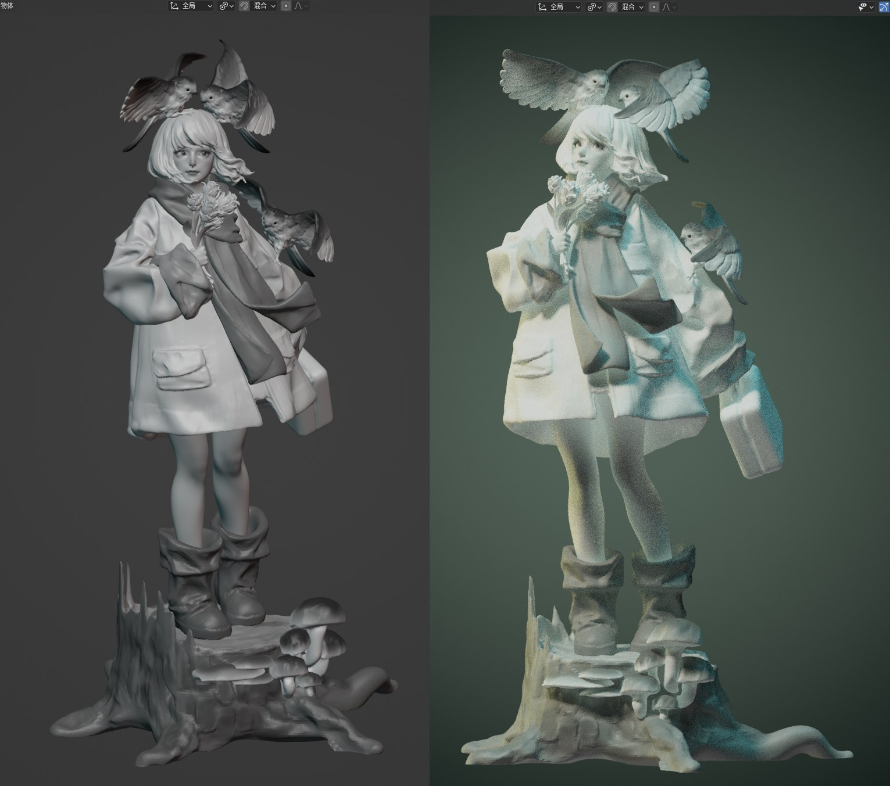
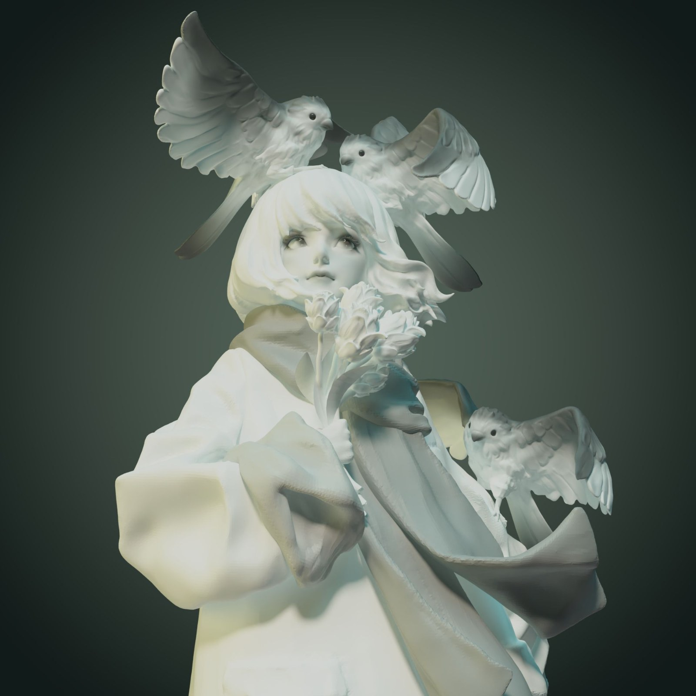
大型都定好之后，接下来便开始逐个细化。
因为制作全程都是凭自己感觉和经验，没有找任何参考，包括鸟的造型，它只是鸟，所以没有去深究它是什么种类了，仅仅只是跟着感觉走。
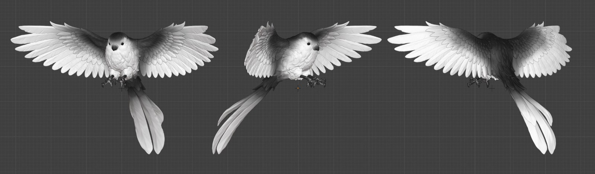
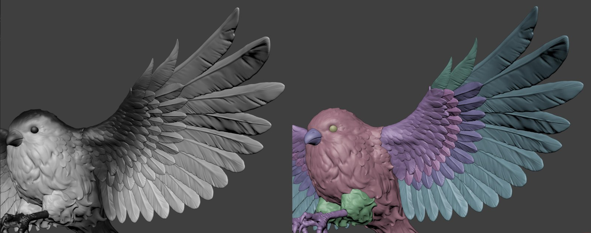
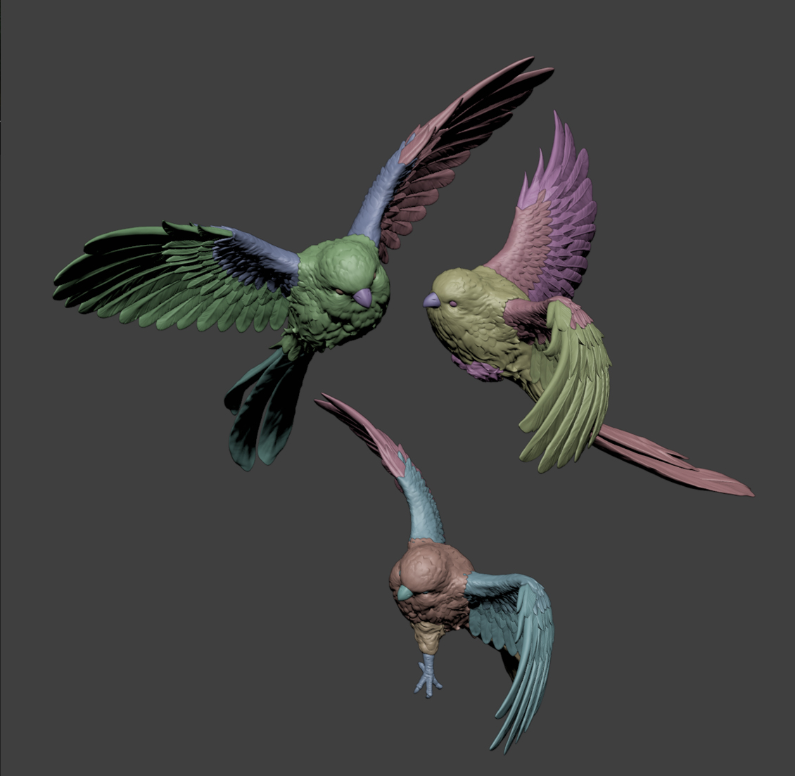
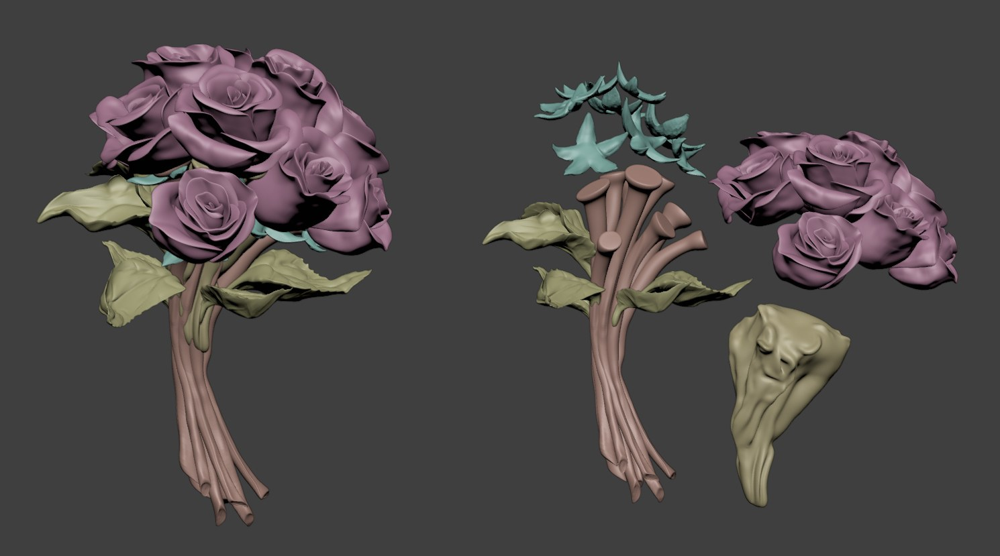
我想让整体模型保持一定风格的线条感，所以都是强调手工雕刻，并没有通过程序化或者布料解算等方式去实现造型。
不过我会在其它方式上追求更好的效率，比如更规范的文件管理方式和流程，还有适合自己的软件设置或插件，我也会通过AI写的脚本去实现一些软件中没有的功能做成插件，前提是你需要清楚软件基础的运行逻辑，这样才会更好的给AI提功能需求。目前我自己通过AI写的插件已有50多个功能，包含多个系统模块，“工欲善其事必先利其器”。
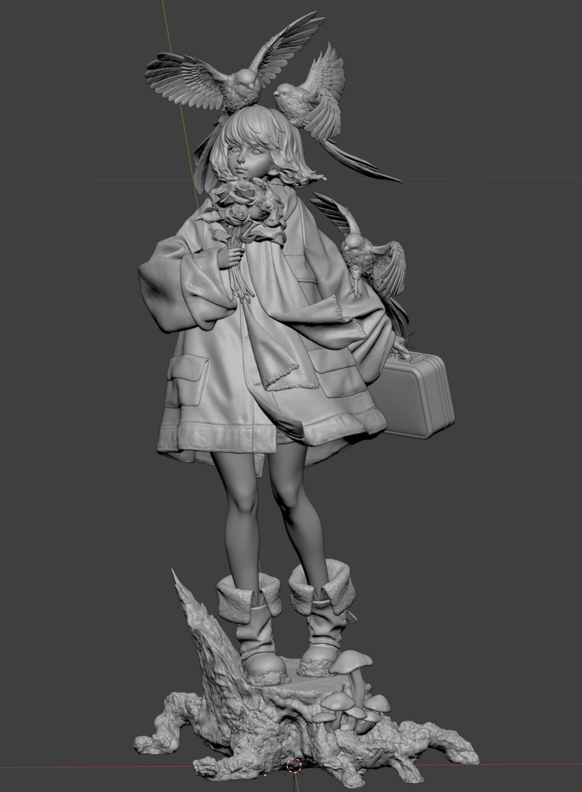
G：您是如何处理拓扑结构并展开模型进行纹理绘制的？这部分工作使用了什么工具？
V:对于拓扑，接下来就会讲到Blender中的一个插件“QuadRemesher”，它跟ZBrush中的ZRemesher功能一样，根据模型结构重新计算四边形拓扑结构，虽然在拓扑结构引导方面不及ZB中的ZRemesher，不过作为雕刻模型的基础，已经足够，如果模型确实需要特定拓扑结构的地方，我就可以进行手动修改来完成。
当我有了较为均匀的四边面拓扑模型，我就可以对其添加Multires修改器进行细分，并且把它缩裹到前面的体素模型，并应用缩裹修改器，这样在Multires修改器中就继承了相应的映射细节以便进一步雕刻。
当手动雕刻的外形以及细节完成后，我还能对其添加一个Displace修改器并添加纹理，这样模型表面就有了一些细致的肌理。
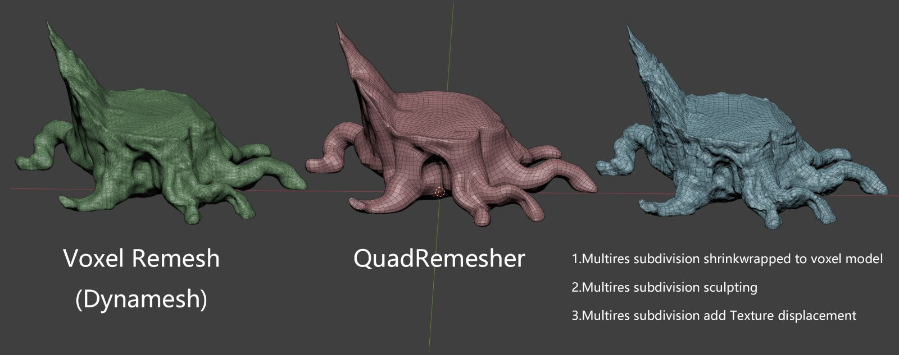
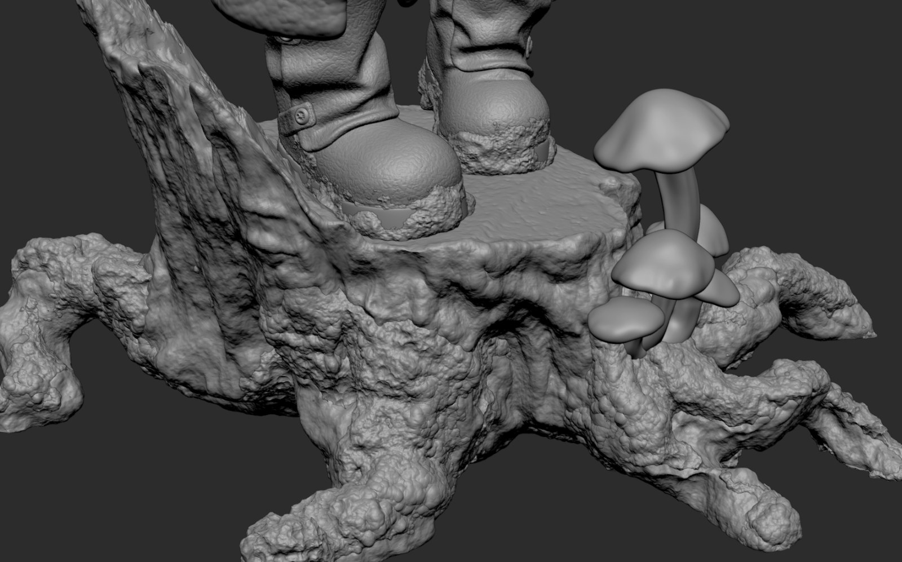
模型完成后，接下来就是UV的部分， 以下是我大致的一个流程：
1.四边面拓扑
2.多级细分雕刻
3.低级细分UV
4.保留UV减面
5.高低模烘焙
在我最开始尝试使用低模烘焙的方式上色这个流程时，按照习惯，我会使用高模减面之后的模型作为低模然后再来分配UV，但是这样做的方式会导致在修改或微调模型后，UV以后的步骤又得重新来一次，非常不方便。于是我将细分雕刻模型的最低级别网格分好UV，这样再调整模型后，UV任然存在，会减少修改带来的工作量。
UV是在Blender中完成的，我只需要做到尽量减少变形拉伸的情况下展开UV就可以，因为网格是插件计算的，并不规范，所以UV的缝线我并没有很注重它的位置，只要能保持松弛展开的状态就行。
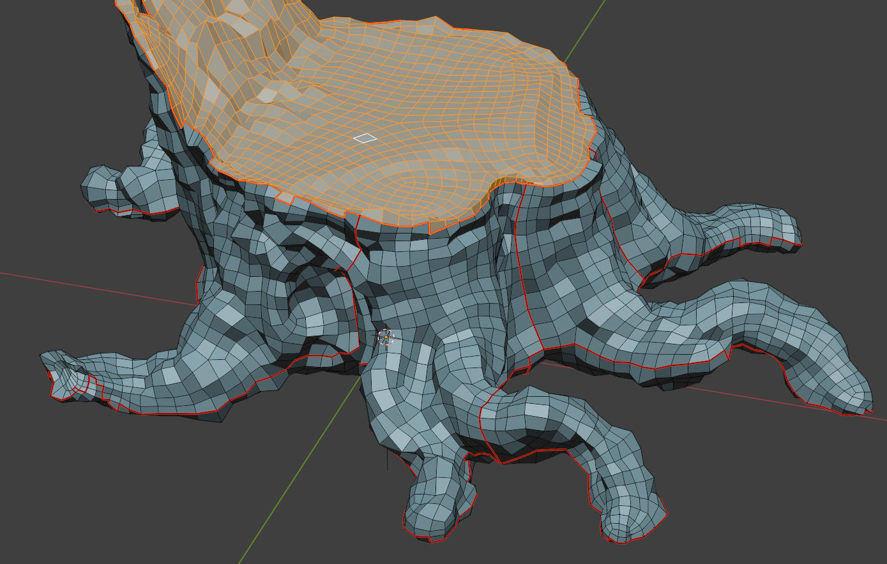
像树根这样复杂的结构，我是通过面选择来分割UV，这样比较快速，只需要让UV边缘能够大致按照结构线走，并没有细致处理UV边线是否连续，这并不会影响在材质制作时的效果。
UV的排布也是自动的，不过我还是会将部分不可见的部分缩小，以最大化增强贴图的使用率。
以上就是我所使用的最快速的UV分割方式。
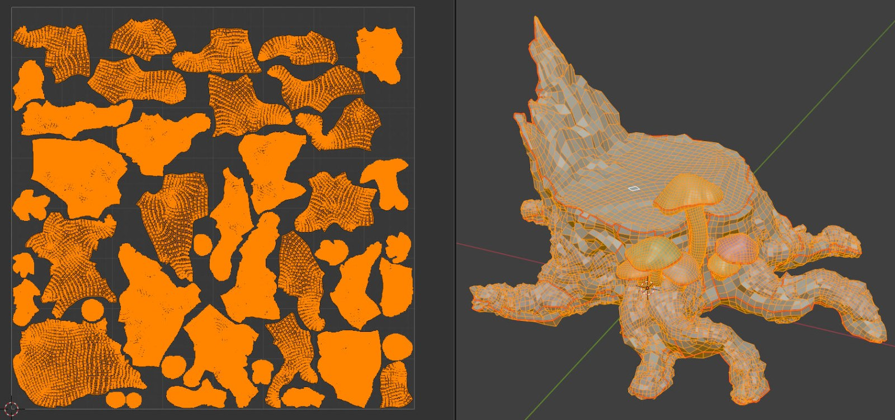
减面操作我是在ZBrush中进行的，因为它能保留UV排布的情况下进行减面。在Decimation Master中开启Keep UVs进行计算即可。
最后我会使用Deformation工具栏中的Smooth命令平滑一次，以减少减面后造成的顶点黑影，这也不会影响对模型结构产生影响。
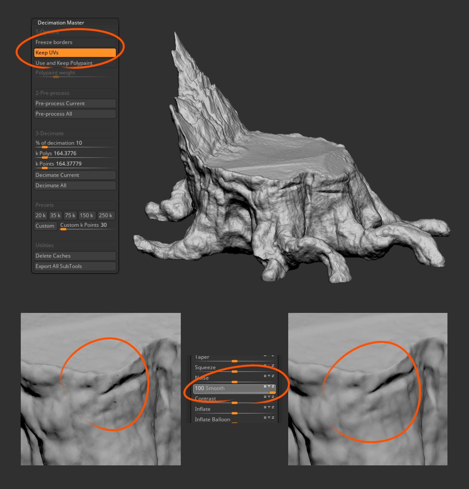
G：请讲讲纹理制作过程。您是如何设置纹理的？能否详细说说最具挑战性的图层？
V：在Substance 3D Painter中完成烘焙，图层只要按照材质规律设置，通过文件夹嵌套方式来管理，就会变得非常容易。因为我会尽量按照实物上漆的工艺去做材质，更加注重整体的色彩感，不会有很复杂的细节添加或者追求很真实的材质效果，所以整体还是比较简单的。
当我做好遮罩范围、渐变效果以及纹理糙度这些设置后，我会配合渲染效果，花大量时间来对颜色进行调整，强化色彩感。
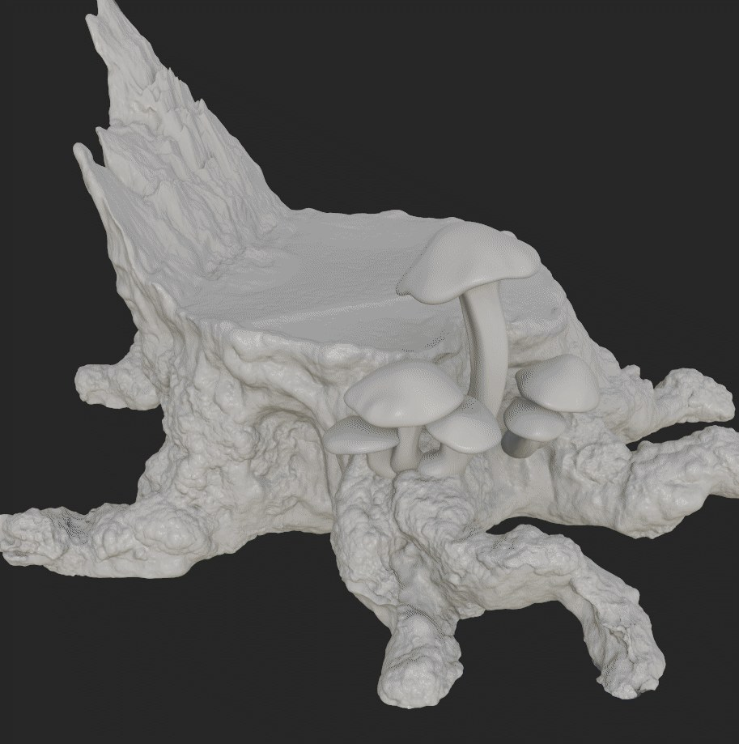
G：请讲讲纹理制作过程。您是如何设置纹理的？能否详细说说最具挑战性的图层？
V：材质颜色和渲染设置几乎是同步进行的，在此之前我都是用Blender的Cycles配合Compositor模块进行渲染，但是我觉得渲染效率还是比较低，因为我需要考虑视频动态展示的需要。因此我第一次尝试使用了Marmoset Toolbag 5，以前我比较追求光线追踪的画面计算效果，觉得Marmoset Toolbag只是一个能比较快速展示次世代模型的实时渲染引擎。不过这次接触后发现它的光线追踪效果让我挺意外的，至少在展示我的人物模型效果上基本能和Cycles媲美，也就是这次展示的上色渲染图所呈现的效果。
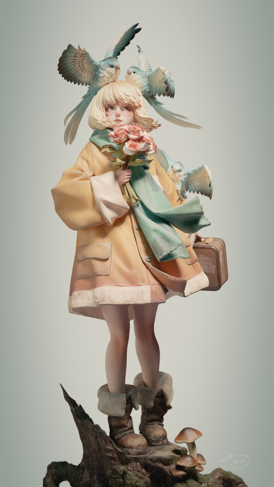
关于灯光，在场景中，我只用了一个平行灯光，为了画面看起来柔和，我将Diameter参数调大，让影子边缘看起来柔软一些，但是又不失去阳光照射的感觉。天空盒则是随便选择的一张HDRI图作为环境光，重点只是有一点点环境光变化即可，并没有刻意去做侧面光、背面光等等，因为我需要柔美的画面。
一个平行灯光，一个HDRI图，就是我所有的灯光设置了。
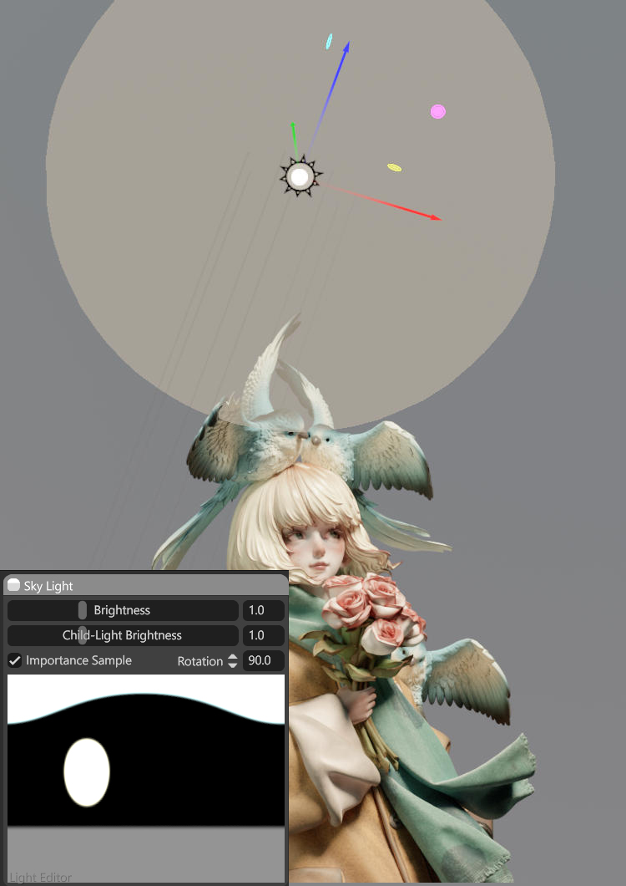
为了强化柔美的风格，后期我也会让它往柔和的方向更进一步，我总是喜欢让光影，包括色彩对比看起来比较淡雅，我觉得这样会更突出画面的色彩感，就像画的一样，我总是会忍不住这样去调整。
总结来说我会将画面分为暗调、中调、亮调、白调(高光)，按照我的习惯他们都逃不掉像下面这样的操作：
白调：下压，让高光不会过白。
亮调：下压，让画面亮的部分减弱对比。
中调：微微提亮，让画面看起来更加明亮。
暗调：微微提亮，并加一点点饱和，让画面阴影部分更通透。
总之所有渲染和后期操作都在为一个风格方向去努力，以画面感为目标。
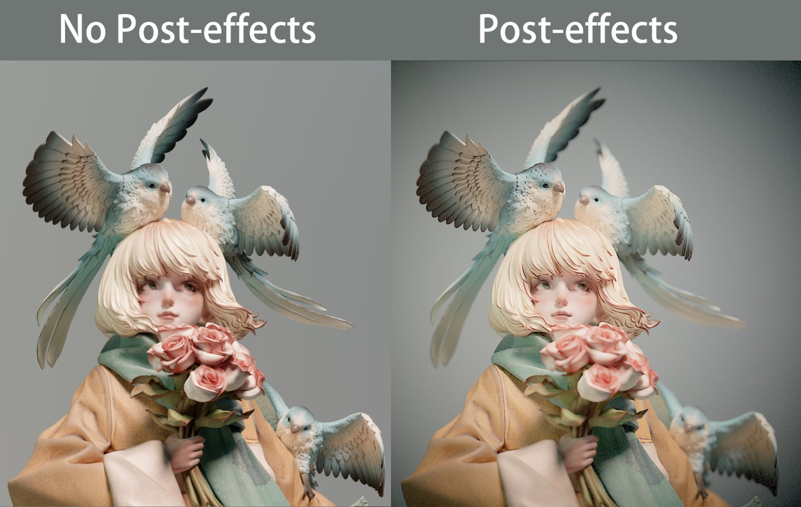
G：创作过程中遇到的主要挑战是什么？学到了什么？对于这个角色，您有什么后续计划？
V：我因为一直都是处于一个学习和探索的状态，也对此有非常高的热情，加上我清楚我的每个作品要达到的目标重点是什么，我并不会觉得一个作品可以是完美的，还能把各个方面都兼顾到，那是不可能的。
对于我来说，有挑战的就是关于设计吧，因为3D模型制作过程肯定比画一个设计图更冗长，过程中会经过很多道工序，一些小小的修改或许会让工序反反复复，当你在醉心于某些技术时，或许就会忽略设计上的问题，在你反复修改几次后，你可能已经看麻木了，导致无法抓住重点和准确判断。所以这对于三维创作来说有着更高的要求，而这个要求是基于自己现有的能力不断拔高的。在整个过程中，把控的始终是你自己，从开始画稿，到模型渲染完成，都属于创作的过程，这期间会充满变化，想法的变化、心态的变化、审美的变化，都会导致作品有不同的结果。
所以我觉得能够稳定心态沉下心来创作是最大的挑战，不断提升自己的同时，还需要去平衡在过程中遇到各种矛盾的问题，并且能够去接受它，接受不完美，冷静面对它。
驻足这个作品我在去年已经做成了GK白模，期间一直没有颜色设计，我是最近才开始用Substance 3D Painter对静态模型进行材质上色，以前为了图方便，都是用ZB的顶点色绘制上色，Keyshot进行渲染，不过在材质设计上有很大限制。现在以这样的方式进行上色，尽管还是需要UV、低模、烘焙这些繁琐的环节，不过对最终效果提升很大，再使用Marmoset Toolbag渲染，就可以更好的展示了，让作品更完整，所以后续我希望实物模型也能有这样的表现，当然这还需要做很多工作。
采访内容到这里就结束了，《驻足》这个作品算是我的一个里程碑式作品，刚好还能有这样的一个过程能展示出来，就觉得还是值得分享~